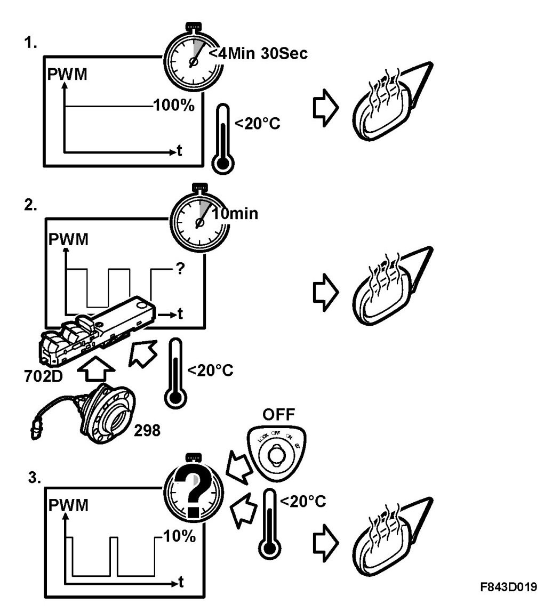
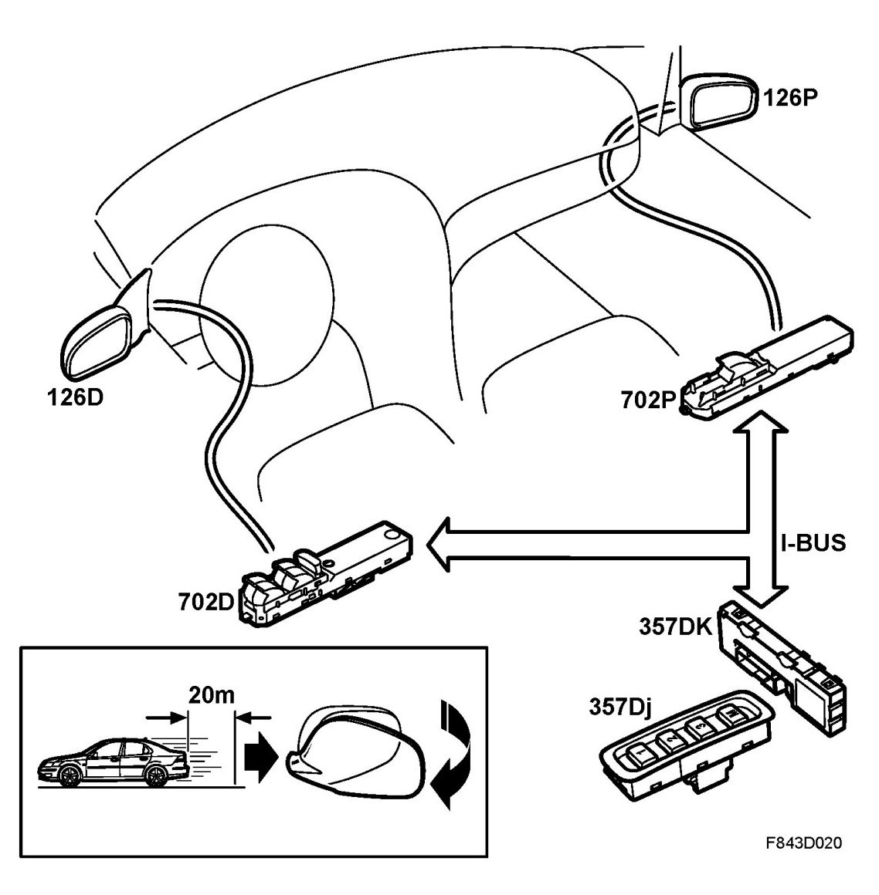
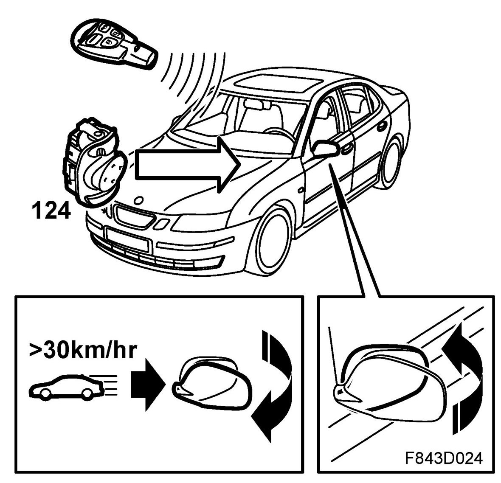

Door Mirrors, Detailed Description
Door Mirrors, Detailed Description
Manual adjustment
DDM reads the status of the door mirror buttons and activates the driver's mirror motors as necessary. If the passenger mirror is selected, the setting command will be transmitted on the bus at which time PDM will feed its mirror's motors. The mirrors can be operated when the key is in the ON position or if the conditions for the comfort function are met. The key position is provided by CIM.
Mirror heating, general
The heating is on constantly if the ambient temperature is below +20 degrees C and battery voltage exceeds 9 V. Heating has 3 phases, which are designed to:

- Heat the mirror quickly.
- Keep the mirror glass at a constant temperature of +20 degrees C for demisting.
- Heat at low level to prevent remisting.
The mirror heating function is found in RRDM. Heating is activated via bus commands from DDM and PDM. The heating effect is pulse modulated (PWM).
Phase 1
The mirrors are heated as fast as possible and the PWM is set to 100%. The duration of phase 1 is a maximum of 6 min 30 s if the ambient temperature is below -20 degrees C and is reduced continuously to 0 at +20 degrees C. Manual activation of the heated rear window does not affect this phase.
Phase 2
The duration of phase 2 is 10 minutes. Heating is continuous and the PWM ratio depends on the ambient temperature and vehicle speed. The purpose of this phase is to keep the mirror glass at a constant temperature of approx. +20 degrees C. The higher the vehicle speed and the lower the ambient temperature, the higher the PWM ratio. Manual activation of the heated rear window extends the phase by 10 minutes. Information about the heated rear window and ambient temperature is provided by the BCM. Vehicle speed is provided by the ECM.
Phase 3
During phase 3, heating is continuous following the same criteria as for phase 2, but the PWM ratio is limited to 10%. Manual activation of the rear window heating switches the system to phase 2 for 10 minutes before returning to phase 3. Manual activation of rear window heating when the ambient temperature exceeds +20 degrees C switches the mirror heating on at full power for 20 s.
Memory function, storing positions
The DDM and PDM each have 3 memory slots for their respective mirror's 2 potentiometer values. When a new seat position is recorded, the DSM sends a message on the bus. The DDM and PDM will then store the potentiometer values for their respective mirrors for that memory slot (1-3).

Memory function, adjustment to stored position
If memory button 1-3 on the seat is pressed, the DSM will transmit the button status on the bus. The DDM and PDM then compare the present potentiometer values with the stored values of that memory slot. If a value differs, the mirror motor will be run until the correct position is attained. If both values differ, the motors will be run alternately so that the correct mirror position is achieved as quickly as possible. If the potentiometer value does not change within 2 s of the motor being activated, the motor output will be disconnected since it can be assumed that the mirror is stuck. The output is active for a maximum of 20 s.
Tilt
This function is provided for mirrors with memory. When you press the tilt button, a bus message is sent from the DDM and is used by the PDM. The PDM manoeuvres its mirror 10 degrees inward and 3 degrees downward in relation to the potentiometer value. The mirror resumes its original position when the button is pressed again or once the car has moved forward 20 m. The road distance is provided by the ECM and the engaged gear is provided by the TCM or UEC (manual gearbox).
Folding in/out (option)
Using the keypad on the driver's door, the door mirrors can also be folded in. Each door mirror has an additional motor for this purpose. There are no position sensors. Instead, the motors are run to their stops on each press of the button. The end position is detected by an increase in motor current. The DDM reads the button status and activates the motor for the driver's door mirror. The DDM also sends out the button status on the bus, and the PDM activates the motor for the passenger door mirror. The mirrors cannot be retracted at speeds above 30 km/h. The mirror motors are always activated to fold the mirrors out the first time vehicle speed exceeds 30 km/h after the engine has been started. The mirrors are folded in automatically during comfort closing.
